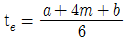
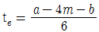
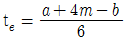
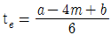
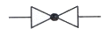
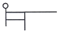
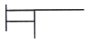
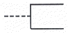
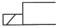
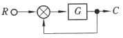

설비보전기사(구) (2014-05-25 기출문제)
1과목: 설비 진단 및 계측
1. 다음 중 회전 속도계를 의미하는 것은?
- 타코미터(tachometer)
- 퍼텐쇼미터(potentiometer)
- 서미스터(thermistor)
- 로드 셀(load cell)
(정답률: 74%)

2. 압전체에 힘이 가해질 때 그 힘에 비례하는 전하가 발생하는 피에조(piezo)효과를 이용한 센서는?
- 압전형 가속도 센서
- 스트레인게이지 가속도 센서
- 서보 가속도 센서
- 와전류 가속도 센서
(정답률: 80%)
3. 다음 진동 센서 중 진동의 변위를 전기신호로 변환하여 진동을 검출하는 센서는?
- 와전류형
- 동전형
- 압전형
- 서보형
(정답률: 74%)
4. 교류신호에서 반복파형의 한 주기 사이에서 어느 순간지점의 위치를 나타내는 것은?
- 진폭
- 주파수
- 주기
- 위상
(정답률: 77%)
5. 차압식 유량계의 종류가 아닌 것은?
- 오리피스
- 노즐
- 로터미터
- 벤투리관
(정답률: 72%)
6. 다음 중 진동의 종류와 그에 대한 설명이 잘못 연결된 것은?
- 자유 진동 – 외란이 가해진 후에 계(系)가 스스로 진동을 하고 있는 경우이다.
- 비감쇠 진동 – 대부분의 물리계에서 감쇠의 양이 매우 적어 공학적으로 감쇠를 무시한다.
- 선형 진동 – 진동의 진폭이 증가함에 따라 모든 진동계가 운동하는 방식이다.
- 규칙 진동 – 기계 회전부에서 생기는 불평형, 커플링부의 중심 어긋남 등의 원인으로 발생하는 진동이다.
(정답률: 59%)
7. 다음 각 고유진동수에 대한 진동차단기의 효과로 틀린 것은? (단, R=외부 진동주파수/시스템 고유주파수)
- R = 1.4 이하 : 진동차단효과 증폭
- R = 1.4 ~ 3 : 진동차단효과 높음
- R = 3 ~ 6 : 진동차단효과 낮음
- R = 6 ~ 10 : 진동차단효과 보통
(정답률: 76%)
8. 다음 설비진단기법 중 오일분석법이 아닌 것은?
- 페로그래피법
- 변형게이지법
- 원자흡광법
- 회전전극법
(정답률: 65%)
9. 사람이 들을 수 있는 최저 가청 음압은?
- 20 × 105 N/m2
- 2 × 105 N/m2
- 20 × 10-5 N/m2
- 2 × 10-5 N/m2
(정답률: 78%)
10. 정밀, 보통, 간이 소음계 주파수 범위에 해당되지 않는 것은?
- 20~12500 Hz
- 31.5~8000 Hz
- 70~6000 Hz
- 10~40000 Hz
(정답률: 76%)
11. 열전온도계(therom electric pyrometer)에 관한 설명 중 틀린 것은?
- 다른 금속을 접합하여 양단의 온도차에 의해 발생되는 기전력을 이용한다.
- 온도차에 의해 발생되는 열기전력 현상을 톰슨효과(Thomson effect)라 한다.
- 백금로듐과 백금의 이종재를 결합하면 섭씨 1000도 이상에서도 사용할 수 있다.
- 열전온도계는 저항온도계와 달리 전원이 필요 없다.
(정답률: 75%)
12. 기어에서 발생하는 소음을 감소시키기 위한 대책으로 틀린 것은?
- 기어 측의 회전 모멘트를 균일 하게 유지한다.
- 평기어(Spur gear)를 헬리컬 기어(Helical gear)로 교체한다.
- 기어면의 동적인 하중을 증가시킨다.
- 축의 강성을 강화하여 기어 맞물림 주파수와의 일치를 피한다.
(정답률: 70%)
13. 측온 저항체에서 공칭 저항값은 몇 ℃에서의 저항값을 말하는가?
- -10℃
- 0℃
- 10℃
- 20℃
(정답률: 78%)
14. 다음 설명 중 틀린 것은?
- 회전기계에서 운전 중 공진이 발생하면 회전수를 바꿔도 진동은 감쇠되지 않는다.
- 공진이란 가진력의 주파수와 설비의 고유 진동수가 일치하여 발생하는 현상이다.
- 회전기계에서 회전자가 공진 주파수와 일치하는 속도를 위험 속도라 한다.
- 회전체의 1차 고유 주파수와 일치하는 회전 주파수를 임계주파수라 한다.
(정답률: 62%)
15. 설비진단 기술의 필요성을 나열한 것 중 틀린 것은?
- 고장손실의 증대를 방지
- 점검자의 기술수준에 따른 격차 해소
- 설비의 수명연장
- 설비결함의 정성적인 점검이 불가능할 때
(정답률: 69%)
16. 진동의 에너지를 표현하기 위한 적합한 값은?
- 편진폭
- 양진폭
- 실효값
- 평균값
(정답률: 84%)
17. 프로세스 제어계에서 제어량을 검출부에서 검지하여 조절부에 가하는 신호는?
- PV(process variable)
- SV(setting value)
- MV(manirulate variable)
- DV(differential variable)
(정답률: 81%)
18. 석영과 같은 일부 크리스탈은 압력을 받으면 전위를 발생시키는데 이를 무슨 효과라 하는가?
- 열전효과(Thermoelectric effect)
- 광전효과(Photoelectric effect)
- 광기전력 효과(Photovoltaic effect)
- 압전효과(Piezoelectric effect)
(정답률: 79%)
19. 다음 소리의 물리적 성질에 대한 설명 중 틀린 것은?
- 소리의 간섭 – 서로 다른 파동사이의 상호 작용으로 나타나는 현상
- 소리의 굴절 – 투과되지 않은 음이 장애물에 입사하여 장애물 뒤쪽으로 전파하는 현상
- 마스킹 효과 – 크고 작은 두 소리를 동시에 들을 때 큰소리만 들리고 작은 소리는 듣지 못하는 현상
- 호이겐 원리 – 파동이 전파되어 나갈 때 단면의 각점은 점음원이 되어 새로운 파면을 만드는 현상
(정답률: 78%)
20. 설비진단 기술 도입의 일반적인 효과가 아닌 것은?
- 고장의 정도를 정량화 할 수 있어 누구라도 능숙하게 되면 동일레벨의 이상 판단이 가능해 진다.
- 경향관리를 실행함으로써 설비의 수명예측이 가능하다.
- 간이진단을 실행하여 설비의 열화부위와 내용을 알 수 있기 때문에 오버홀이 필요하다.
- 중요설비, 부위를 상시 감시함에 따라 돌발적인 고장을 방지하는 것이 가능하다.
(정답률: 71%)
2과목: 설비관리
21. 어떤 사상(事象)을 조사 또는 관리하는 경우 그 목적에 적합한 사상을 선정하여 과학적으로 측정하고 유효하게 수량화하여 그 결과가 객관적인 자료로서 의미를 갖도록 하는 것은?
- 계측화
- 효율화
- 적정화
- 계량화
(정답률: 75%)
22. 휴지공사 계획 시 필요 없는 대기를 없애고 공사의 진행관리를 하기 쉽도록 가장 경제적인 일정계획을 세울 때 사용하는 순수작업 기법은?
- PERT
- MTBT
- MTTR
- TPM
(정답률: 69%)
23. 욕조곡선(bathtud curve)에서 나타내는 우발고장 원인이 아닌 것은 무엇인가?
- 안전 계수의 미확보
- 예측보다 낮은 설비강도
- 설비의 혹사
- 제조과정의 실수
(정답률: 71%)
24. TPM의 우선수위 활동인 자주보전의 효과측정을 위한 방법과 가장 거리가 먼 것은?
- MTBF(평균가동시간)의 연장
- OPL(one point lesson)
- FMCEA(고장유형, 영향 및 심각도 분석)
- 기준서 작성현황
(정답률: 49%)
25. TPM의 목적과 거리가 먼 것은?
- 자주보전 능력 향상
- 작업환경 관리 향상
- 재해 “0”, 불량 “0”. 고장 “0” 추구
- LCC(Life Cycle Cost)의 경제성 추구
(정답률: 45%)
26. 공사관리를 위한 PERT 기법에서 공사의 평균치(te)를 구하기 위한 식은? (단, a는 낙관적 시간, b는 비관적 시간, m은 전형적 시간이다.)




(정답률: 71%)
27. 제조능력의 요인은 크게 외적요인과 내적요인으로 구분된다. 이 중 외적요인(제약요인)에 해당되지 않는 것은?
- 자재
- 노동
- 자금
- 설비
(정답률: 66%)
28. 현재 보유 설비를 교체하거나 갱신할 목적으로 설비투자에 대한 경제성 평가방법으로 적합한 것은?
- 원가비교법
- 회수기간법
- 이익률법
- 미래가법
(정답률: 58%)
29. 설비보전이 필요한 이유로 적합하지 않은 것은?
- 납기를 준수할 수 있고, 제품 원가를 낮출 수 있다.
- 작업환경 조건 개선 및 작업자의 근로 의욕을 증진 시킬 수 있다.
- 설비의 고장, 정지, 성능저하를 방지할 수 있다.
- 설비의 열화로 인한 수율 상승, 에너지 손실을 막을 수 있다.
(정답률: 50%)
30. 프로세스형 설비의 9대 로스에 속하지 않는 것은?
- 재료수율 로스
- 속도저하 로스
- 공정불량 로스
- 시가동 로스
(정답률: 47%)
31. 다음 만성로스의 특징과 만성로스의 대책에 관한 설명 중 옳은 것은?
- 만성로스의 원인은 하나이지만 원인이 될 수 있는 것이 수없이 많으며, 그 내용에는 변함이 없다.
- 만성로스는 현상의 해석을 철저히 한다.
- 만성로스는 복합원인으로 발생하며, 그 요인의 조합 내용은 변함이 없다.
- 만성로스는 요인 중에 숨어 있는 결함은 가급적 표면화 시키지 않는다.
(정답률: 59%)
32. 설비의 효율을 높여 관리하기 위한 활동인 오버홀(Overhaul)은 어떤 보전 활동에 포함 되는가?
- 일상보전활동
- 사후보전활동
- 예방보전활동
- 개량보전활동
(정답률: 73%)
33. 설비보전 요소에 해당되지 않는 것은?
- 열화방지
- 열화측정
- 열화회복
- 열화지연
(정답률: 75%)
34. 설비 종합 효율에 크게 영향을 주는 로스 중 시간 가동률에 영향을 주는 로스가 아닌 것은?
- 고장 로스
- 작업 준비 로스
- 속도 저하 로스
- 조정 로스
(정답률: 45%)
35. 컴퓨터를 이용한 설비 배치 안을 작성하는 방법 중 기존의 배치 안을 개선하는 기법은?
- CRAFT
- PLANET
- CORELAP
- ALDEP
(정답률: 66%)
36. 생산공정에 있어 취급되는 재료, 반제품 또는 완제품을 공정에 받아들이거나 공정 도중 또는 최종 작업단계에서 대상물의 작업 기준 합치여부를 조사하기 위해 사용되는 공구는?
- 치구부착구
- 검사구
- 주조
- 단조
(정답률: 79%)
37. 계측 관리를 하기 위하여 공정의 흐름을 객관적, 도식적으로 표현하여 관계자의 관점을 계통적으로 표현한 기술 양식은?
- 공정명세표
- 작업표준서
- 공정일정표
- 프로세서 흐름도
(정답률: 62%)
38. 설비의 공사관리로 PERT 기법의 내용 중에서 틀린 것은?
- 전형적 시간(Most Likely Time)은 공사를 완료하는 최빈치를 나타낸다.
- 낙관적시간(Optimistic Time)은 공사를 완료할 수 있는 최단 시간이다.
- 비관적시간(Pessimistic Time)은 공사를 완료할 수 있는 최장 시간이다.
- 위급경로(Critical Path)는 공사를 완료하는데 가장 시간이 적게 걸리는 경로를 말한다.
(정답률: 73%)
39. 다음 설비 대안의 평가를 위한 방법 중 자본사용의 여러 가지 방법에 대하여 창출되는 수입액수를 기준으로 하는 방법은?
- 회수 기간법
- 현가액법
- 연차 등가액법
- 수익률법
(정답률: 71%)
40. 설비관리조직의 개념 중 틀린 것은?
- 설비관리의 목적을 달성하기 위한 수단이다.
- 설비관리의 목적을 달성하는데 지장이 없는 한 될수록 전문화해야 한다.
- 인간을 목적달성의 수단이라는 요소로서만 인식해야 한다.
- 환경의 변화에 끊임없이 순응할 수 있는 유기체이여야 한다.
(정답률: 58%)
3과목: 기계일반 및 기계보전
41. 관래 압력이 포화증기압 이하로 되어 소음과 진동이 생기고 양수불능이 원인이 되는 현상은?
- 수격작용
- 서어징
- 캐비테이션
- 크래킹
(정답률: 72%)
42. 나사의 종류를 표시하는 기호 중에서 유니파이 가는 나사를 나타내는 것은?
- UNC
- UNF
- Tr
- M
(정답률: 76%)
43. 축의 중심내기 방법 중 틀린 것은?
- 죔 형 커플링의 경우 스트레이트 에지를 이용하여 중심을 낸다.
- 체인커플리의 경우 원주를 4등분한 다음 다이얼게이지로 측정해서 중심을 맞춘다.
- 플랜지의 면간의 차도 측정하여 중심 맞추기를 한다.
- 플렉시블 커플링은 중심내기를 하지 않는다.
(정답률: 78%)
44. 다음은 고장종류에 대한 설명이다. 조립 정밀도에 의한 고장으로 볼 수 없는 것은?
- 부착기준면 불량에 의한 고장
- 연결부의 연결 상태 불량
- 결합부품의 편심으로 진동발생
- 열에 의해 부품의 마모
(정답률: 78%)
45. 일반적인 줄 작업에 대한 설명 중 틀린 것은?
- 오른손 팔꿈치를 옆구리에 밀착시키고 팔꿈치가 줄과 수평이 되게 한다.
- 보통 줄의 사용 순서는 중목→황목→세목→유목의 순으로 작업한다.
- 왼손은 줄의 균형을 유지하기 위해 손목을 수평으로 하고 손바닥으로 줄 끝을 가볍게 누르거나 손가락으로 싸 준다.
- 줄을 앞으로 밀 때 힘을 가하고 뒤로 당길 때 힘을 주지 않는다.
(정답률: 74%)
46. 표면경화 열처리 중 질화법의 특징으로 틀린 것은?
- 경도는 침탄층보다 높다.
- 질화 후의 열처리가 필요 없다.
- 경화에 의한 변형이 크다.
- 질화층을 깊게 하려면 긴 시간이 걸린다.
(정답률: 59%)
47. 다음 중 연삭 가공법의 종류에 해당되지 않는 것은?
- 호닝(honing)
- 버핑(buffing)
- 래핑(lapping)
- 보링(boring)
(정답률: 66%)
48. 다음 중 공작기계의 구비조건이 아닌 것은?
- 가공된 제품의 정밀도가 높아야 한다.
- 가공능력이 좋아야한다.
- 기계효율이 좋고, 고장이 적어야 한다.
- 강성(rigidity)이 없어야 한다.
(정답률: 82%)
49. 다음 기어 중 축(Shaft)의 방향을 변화시키는 기어가 아닌 것은?
- 헬리컬 기어
- 스파이럴 베벨기어
- 하이포이드 기어
- 웜 기어
(정답률: 50%)
50. 다음 기호의 명칭으로 옳은 것은?

- 앵글 밸브
- 볼 밸브
- 체크 밸브
- 안전 밸브
(정답률: 71%)
51. 스퍼기어를 도면에 나타낼 때 치형을 생략하고 간략하게 표시할 수 있는데 그 방법이 잘못된 것은?
- 주 투상도의 이봉우리 선, 측면도의 이 봉우리 원은 굵은 실선으로 그린다.
- 주 투상도의 피치선, 측면도의 피치원은 가는 실선으로 그린다.
- 주 투상도를 단면으로 도시할 때에는 이뿌리 선은 굵은 실선으로 도시한다.
- 측면도의 이뿌리원은 가는 실선으로 도시한다.
(정답률: 51%)
52. 보전용 재료 중 방청 윤활유의 종류가 아닌 것은?
- 1종(1호) : KP-7
- 1종(2호) : KP-8
- 1종(3호) : KP-9
- 1종(4호) : KP-10
(정답률: 80%)
53. 스패너에 의한 적정한 죔 방법 중 M 12~14까지의 볼트를 죌 때 스패너 손잡이 부분의 끝을 꽉 잡고 힘을 충분히 주어야 하는데, 이때 가해지는 적당한 힘은 얼마인가?
- 100 kgf 이상
- 약 50 kgf
- 약 20 kgf
- 약 5 kgf
(정답률: 74%)
54. 긴 관로나 유체기기의 가까이 설치하여 분해, 정비를 용이하게 할 수 있는 배관 이음쇠는?
- 니플(nipple)
- 엘보(elbow)
- 소켓(socket)
- 유니언(union)
(정답률: 76%)
55. 기어감속기의 분류에서 평행축형 감속기만 나열한 것은?
- 스퍼기어, 스트레이트베벨기어
- 웜기어, 스트레이트베벨기어
- 스퍼기어, 헬리컬기어
- 웜기어, 하이포이드기어
(정답률: 68%)
56. 다음 정비용 측정기구의 측정방법으로 직접 측정에 대한 장점이 아닌 것은?
- 측정 범위가 다른 측정 방법보다 넓다.
- 측정물의 실체치수를 직접 잴 수 있다.
- 양이 적고 종류가 많은 제품을 측정하기에 적합하다.
- 다량 제품 측정에 적합하다.
(정답률: 60%)
57. 다음 중 용적형 송풍기는 어느 것인가?
- 축류 블로어(blower)
- 터보 팬(fan)
- 루츠 블로어(roots blower)
- 다익 팬(fan)
(정답률: 58%)
58. 용접으로 인한 잔류응력을 제거하는 방법으로 가장 적합한 것은?
- 담금질
- 풀림
- 불림
- 뜨임
(정답률: 67%)
59. 다음 압축기 배관에 설명 중 틀린 것은?
- 드라이 필터는 압축기와 탱크사이에 설치한다.
- 배관길이는 맥동을 방지하기 위해 공진 길이를 피하여야 한다.
- 2대 이상의 압축기를 1개의 토출관으로 배관 시 체크밸브와 스톱밸브를 취부한다.
- 토출 배관에는 흐름이 용이하도록 경사를 고려한다.
(정답률: 62%)
60. 전동기의 결함에 따른 원인으로 적합하지 않은 것은?
- 기동불능일 때 : 퓨즈의 단락
- 전동기의 과열 시 : 과부하
- 저속으로 회전 시 : 축받이의 고착
- 회전이 원활하지 못할 때 : 회전자 동봉의 움직임
(정답률: 68%)
4과목: 윤활관리
61. 다음 중 윤활유 첨가제가 갖추어야 할 조건이 아닌 것은?
- 기유에 대한 용해도가 낮을 것
- 휘발성이 낮을 것
- 첨가제 상호간 반응으로 침전물 등이 생기지 않을 것
- 물에 대해 안정할 것
(정답률: 68%)
62. 윤활유의 산화정도를 나타내는 시험방법인 전산가(Total Acid Number)에 대한 정의는?
- 시료 1g중에 함유된 전 산성 성분을 중화하는데 소요되는 KOH의 mg수
- 시료 10g중에 함유된 전 산성 성분을 중화하는데 소요되는 KOH의 mg수
- 시료 1g중에 함유된 전 알칼리 성분을 중화하는데 소요되는 산과 당량의 KOH의 mg수
- 시료 10g중에 함유된 전 알칼리 성분을 중화하는데 소요되는 산과 당량의 KOH의 mg수
(정답률: 65%)
63. 유압펌프에서 유압작동유가 토출되지 않는 원인으로 틀린 것은?
- 오일탱크 내의 유량이 부족하다.
- 오일 흡입라인의 누설이 있다.
- 펌프(베인펌프) 회전속도가 낮다.
- 오일점도가 너무 낮다.
(정답률: 70%)
64. 다음 중 윤활유의 점도 변화에 가장 큰 영향을 주는 인자는 어느 것인가?
- 습도
- 압력
- 비중
- 온도
(정답률: 76%)
65. 왕복동 압축기의 윤활설비의 고장현상과 조치방법으로 틀린 것은?
- 토출밸브에 카본 부착이 많은 경우 윤활유 소모량을 점검하고 냉각수 온도를 낮춘다.
- 피스톤링과 실린더의 마모가 증가한 경우 급유관의 막힘을 점검한다.
- 발화시 압축링과 스크래퍼링을 점검하여 윤활유의 실린더 유입을 방지한다.
- 수분으로 인한 고장발생으로 감소시키기 위해 친유화성 윤활유를 사용한다.
(정답률: 51%)
66. 그리스의 내열성을 확인하는 시험으로 가열시 최초로 융해 적하하기 시작되는 최저의 온도를 무엇이라 하는가?
- 점도
- 유동점
- 적점
- 이유도
(정답률: 71%)
67. 윤활유의 적정점도 선정 시 일반적으로 고려할 사항으로 가장 거리가 먼 것은?
- 주위환경 온도
- 운전속도
- 급유방식
- 하중
(정답률: 64%)
68. 다음 그리스에 대한 설명 중 틀린 것은?
- 그리스 보충은 베어링 온도가 70℃를 초과할 경우 베어링 온도가 15℃ 상승할 때마다 보충주기는 1/2로 단축해야 한다.
- 일반적으로 증주제의 타입 및 기유의 종류가 동일하면 혼용이 가능하나 첨가제간 상호 역반을 일으킬 수 있으므로 혼용에 주의해야 한다.
- 그리스 NLGI 주도 000호는 매우 단단하며 미끄럼 베어링용, 6호는 반유동상으로 집중급유용으로 사용된다.
- 그리스는 기유(Base oil), 특성을 결정해 주는 증주제와 제반 성능을 향상시키기 위해 첨가해 주는 첨가제로 구성되어 있다.
(정답률: 62%)
69. 미끄럼베어링의 윤활법 중 자동화, 시스템화로 기계류에 많이 사용되며 확실한 오일 공급과 유온, 유량의 조절이 쉽고 많은 베어링의 동시윤활이 가능한 방법은?
- 유욕 윤활법
- 링 윤활법
- 손급유 윤활법
- 강제 윤활법
(정답률: 63%)
70. 기어의 치면에 높은 응력이 반복 작용하여 국부적으로 피로현상을 일으켜 박리되어 작은 구멍을 발생하는 현상은?
- 정상마모
- 리플링
- 피팅
- 스코어링
(정답률: 67%)
71. 다음 중 그리스 윤활의 장점이 아닌 것은?
- 유동성이 나쁘기 때문에 누설이 적다.
- 기계의 설계가 간편하고 비용이 적게 든다.
- 냉각효과가 커서 온도상승 제어가 쉽다.
- 흡착력이 강하므로 고하중에 잘 견딘다.
(정답률: 74%)
72. 윤활유의 점도와 온도의 관계를 지수로 나타내는 실험값으로 옳은 것은?
- 점도지수
- 색
- 유동점
- 인화점 및 연소점
(정답률: 74%)
73. 다음 중 비순환 급유방법이 아닌 것은?
- 적하 급유법
- 바늘 급유법
- 손 급유법
- 유욕 급유법
(정답률: 66%)
74. 왕복동 공기 압축기 윤활유의 외부유에 요구되는 성능이 아닌 것은?
- 적정 점도를 가질 것
- 산화 안정성이 좋을 것
- 방청성이 좋을 것
- 저 점도지수유일 것
(정답률: 77%)
75. 다음 중 윤활유의 종류를 통일함으로서 얻을 수 있는 효고가 아닌 것은?
- 급유기구 비용의 절약
- 저장공간의 절약
- 급유관리의 용이화
- 기계설비의 유효수명 연장
(정답률: 68%)
76. 다음 윤활유의 주요 오염물질의 종류별 발생 원인을 나열한 것 중 틀린 것은?
- 산화생성물 : 고온, 수분에 의한 오일의 분해
- 슬러지 : 오염도 증가로 인한 수분의 분해
- 수분 : 수분에 의한 산화방지제의 분해
- 공기 : 펌프 패킹불량에 의한 공기흡입
(정답률: 62%)
77. 마멸은 기계부품의 수명을 단축하는 가장 큰 원인 중 하나이다. 다음 중에서 마멸의 설명과 거리가 먼 것은?
- 마찰은 반드시 마멸을 동반 하는 것이 아니다.
- 마멸은 열적 원인으로도 일어날 수 있다.
- 마멸은 외력에 의해 물체표면의 일부가 분리되는 현상이다.
- 마찰과 마멸은 동일한 현상이다.
(정답률: 71%)
78. 윤활유의 열화 판정 중 직접 판정법에 대한 설명으로 틀린 것은?
- 신유의 성상을 사전에 명확히 파악한다.
- 사용유의 대표적 시료를 채취하여 성상을 조사한다.
- 신유와 사용유의 성상을 비교 검토 후 관리기준을 정하고 교환하도록 한다.
- 투명한 2장의 유리관에 기름을 넣고 투시해서 이물질의 유무를 조사한다.
(정답률: 66%)
79. 다음 중 윤활관리의 효과에 대한 설명 중 틀린 것은?
- 윤활유 사용 소비량 증가
- 보수 유지비의 절감
- 기계의 효율형상 및 정밀도 유지
- 윤활제의 구입비 절감
(정답률: 72%)
80. 유체윤활에서 기본적으로 중요하게 쓰이는 것이 레이놀즈(Reynolds)방정식이다. 이 방정식에 대한 가정으로 거리가 먼 것은?
- 윤활유는 뉴턴 유체이다.
- 유막내의 유동은 층류이다.
- 유체관성은 무시한다.
- 점성은 유막 내에서 일정하지 않다.
(정답률: 52%)
5과목: 공유압 및 자동화
81. 공기압축기의 운전방법 중 압력 릴리프 밸브를 사용하는 방법은?
- ON/OFF 조절
- 그립-암 조절
- 흡입 조절
- 배기 조절
(정답률: 66%)
82. 3상 유도전동기의 동기속도와 슬립을 나타내는 식으로 맞는 것은?
- 동기속도=(120×극수)/주파수, 슬립=[(동기속도-전부하속도)/동기속도]×100(%)
- 동기속도=(120×주파수)/극수, 슬립=[(전부하속도-동기속도)/전부하속도]×100(%)
- 동기속도=(120×주파수)/극수, 슬립=[(동기속도-전부하속도)/동기속도]×100(%)
- 동기속도=(120×극수)/주파수, 슬립=[(전부하속도-동기속도)/전부하속도]×100(%)
(정답률: 55%)
83. 변압기의 결선에 대한 설명 중 옳지 않은 것은?
- △-Y, Y-△ 결선은 중성점을 접지할 수 있어 제3고조파 전압이 나타나지 않으나 1차, 2차의 선간 전압에는 30°의 위상차가 존재한다.
- △-△ 결선은 권수비가 같은 단상 변압기 3대를 이용하여 3상 전압 변환을 실시하는 것이다.
- Y-Y 결선은 성형 결선이라고도 하며 중성점을 접지할 수 없어 유기 기전력에 제3고조파를 포함한다.
- V-V 결선은 △-△에서 1상을 제거한 것이다.
(정답률: 61%)
84. 로봇 운영 방식에 대한 용어 설명 중 틀린 것은?
- 포인트 투 포인트(PTP : point to point) : 직각 좌표상에서 두 축을 동시에 제어할 때 두축이 한 점에서 다른 점까지 움직이는 데 있어서 궤적에 상관없이 중간점들이 지정되지 않는 채 제어되는 것
- 매뉴얼 데이터 입력(MDI : manual data input)방식 : 이미 정의된 위치 데이터를 수동 키(key)조작에 의해 직접 입력하는 방식
- 티칭 플레이 백(TPB : teaching play back)방식 : 위치데이터를 서보 오프(servo off)상태에서 수동 조작하여 위치를 확인한 후 입력하는 방식
- 서보 레디(SVRDY : servo ready) : 아날로그 타입에서 드라이버로 출력하는 속도 명령으로써 최대 ±10[V]이다.
(정답률: 65%)
85. 다음 유압의 특징에 관한 설명 중 틀린 것은?
- 에너지의 변화효율이 공압 보다 나쁘다.
- 속도제어가 우수하다.
- 큰 출력을 낼 수 있다.
- 작동속도가 공압에 비해 늦다.
(정답률: 53%)
86. 공기압 작업 요소 중에서 전지과 후진시의 추력이 같은 장점을 갖는 실린더는?
- 탠덤형
- 양 로드형
- 다위치형
- 텔레스코프형
(정답률: 73%)
87. 피스톤에 0링을 사용한 실린더에 압력이 존재하면 실린더배럴과 피스톤의 간극사이로 0링이 밀려나오는데 이를 방지하는데 사용하는 패킹은?
- 라비린스 실
- 개스킷
- V 패킹
- 백업-링
(정답률: 71%)
88. 압력을 측정하는데 있어서 완전 진공상태를 “0”으로 기준삼아 측정하는 압력은?
- 게이지 압력
- 절대 압력
- 대기 압력
- 표준 압력
(정답률: 74%)
89. 롤러 체인 Free Flow 컨베어 형 자동 조립 라인에서 파렛이 작업위치에 인입되어도 스토퍼 실린더가 상승하지 않아서 파렛의 흐름을 정지 시키지 못하고 있다면 트러블 원인은 무엇인가?
- 롤러 체인의 틈새로 스크류 볼트가 박혀서 체인 구동 모터가 과부하 트립 되고 있다.
- 스토퍼 실린더를 구동하는 솔레노이드 밸브의 코일이 소손되어 밸브가 절환 되지 않는다.
- 제어반 내 PLC CPU의 운전 Key S/W를 RUN모드가 아닌 STOP모드에 두어, PLC가 정지 되었다.
- 컨베어의 이송속도를 제어하는 인버터의 고장으로 이송속도가 제어되지 않는다.
(정답률: 61%)
90. 다음 방향전환 밸브의 전환조작 중 파일럿 조작을 나타낸 것은?




(정답률: 59%)
91. 다음 중 동기 전동기의 장점이 아닌 것은?
- 기동시 조작이 용이하다.
- 부하의 변화로 속도가 변하지 않는다.
- 높은 역률로 운전할 수 있다.
- 전원주파수가 일정하면 회전속도도 일정하다.
(정답률: 46%)
92. 다음 중 압력제어 밸브의 역할은?
- 일의 속도를 조절
- 일의 시간을 조절
- 일의 방향을 조절
- 일의 크기를 조절
(정답률: 74%)
93. 자동제어에 있어서 보드선도는 주파수와 진폭비 및 위상지연을 나타낸다. 보통의 시스템에서 나타나는 진폭비와 위상지연은 얼마로 보는가?
- -3dB, 90도
- -6dB, 120도
- -1.5dB, 45도
- -9dB, 60도
(정답률: 64%)
94. 다음 중 고저압에 관계없이 대관경의 관로용에 사용되며 분해보수가 용이한 관이음은?
- 나사 이음
- 플랜지 이음
- 용접형 이음
- 플레어형 이음
(정답률: 73%)
95. 유압 펌프의 압력 선정시 고려할 사항은?
- 압력, 누설, 안전성, 크기, 무게
- 압력, 양정, 난연성, 크기, 무게
- 압력, 토출량, 공동현상, 인화성
- 압력, 가열, 추종성, 누설
(정답률: 66%)
96. 다음 그림과 같은 블록선도에서 종합 전달함수 C/R는?

- G/1-G
- G/1+G
- 1+G
- 1-G
(정답률: 72%)
97. 공압에서 압력제어 밸브의 종류와 용도가 잘못 짝지어진 것은?
- 감압밸브 – 압력을 일정하게 유지
- 시퀀스밸브 – 작동순서에 따른 액추에이터의 동작
- 압력스위치 – 압력상태를 연속적으로 지시
- 릴리프밸브 – 시스템의 최대 허용압력 초과방지
(정답률: 64%)
98. FMS(Flexible Manufacturing System)에서 추구하는 생산 방식은?
- 수공업 생산
- 대량 생산
- 다품종 소량 생산
- 단순 공구 사용 생산
(정답률: 70%)
99. 다음 중 신호를 기억할 수 있는 회로는?
- AND 회로
- OFF 회로
- OR 회로
- 플립플롭 회로
(정답률: 67%)
100. 다음 중 힘의 단위는?
- kg
- kgf
- kgf·s
- kgf·m
(정답률: 70%)